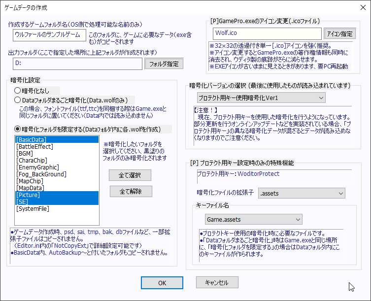

【[P] ゲームデータの作成】
プロ版では、ゲームデータの設定項目が拡張されます。

「暗号化設定」、「暗号化バージョン」については通常版の説明をご覧ください。
【[P]Game.exeのアイコン変更（.icoファイル）】
ゲームデータ出力したGamePro.exeのアイコンを、指定した「.ico」ファイルに差し替えることができます。
アイコンファイルとしては「32×32の透過アイコン」を強く推奨します。
他のサイズでも問題なければ使って構いませんが、64サイズやマルチアイコンは正常に動作しない可能性が高いそうです。
またおまけの機能として、アイコンを差し替えると「GamePro.exeの著作権表記も消去される」ようになっており、
WOLF RPGエディター製の痕跡を減らすことができます。
※この機能を使わずとも、リソースエディタなどを利用したGame.exeのアイコンの差し替えは規約上、許可されています。
できる方は、通常版でも自由にアイコンを差し替えてください。
【[P]プロテクト用キー設定時のみの特殊機能】
これはプロテクト用キーが設定されている場合のみ使用できる機能です。
- 暗号化ファイルの「拡張子」の変更
用意された中から「.wolf」以外の暗号化ファイルの拡張子が選べます。
「Data.assets」など、他ゲームエンジンによくある拡張子に変えられます。
- 「キーファイル名」の設定
用意された中からキーファイル名を選べます。Data2.assetsやList.assetsなどにできます。
このキーファイル内には、上の拡張子変更や暗号化に関するデータが含まれます。